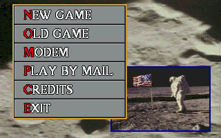
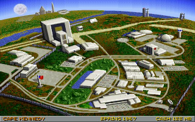

Race Into Space
Dieser Artikel wurde für die folgenden Ubuntu-Versionen getestet:
Ubuntu 14.04 Trusty Tahr
Zum Verständnis dieses Artikels sind folgende Seiten hilfreich:
Root-Rechte, optional
Pakete aus dem Quellcode erstellen, optional
Ein Terminal öffnen, optional
Race into Space  (RIS) ist ein Port of Buzz Aldrin's Race Into Space (BARIS) und basiert auf dem Brettspiel von Fritz Bronner.
(RIS) ist ein Port of Buzz Aldrin's Race Into Space (BARIS) und basiert auf dem Brettspiel von Fritz Bronner.
Es ist das Jahr 1957. Als Leitung der Weltraumbehörde (USA oder UdSSR) steht man vor ungeahnten Herausforderungen. Das Ziel ist der Mond - diesen gilt es mit einer bemannten Mission zu erreichen, bevor dies dem Gegenspieler gelingt. Zusätzliche Missionen, wie z.B. die Aussendung von Raumsonden, führen zu mehr Prestige bei der eigenen Bevölkerung und man erhält mehr Gelder, welche zur Erforschung neuer Technologien, zur Ausbildung der Astronauten... verwendet werden kann.
|  |  |
| Menü | Spielszene |
Installation¶
Paket¶
Von der Projektseite das .deb-Paket herunterladen und installieren [1].
Quellcode¶
Für die Übersetzung des Quellcodes sind die folgenden Pakete erforderlich [2]:
checkinstall
cmake
libsdl-dev
libboost-dev
libpng-dev
libjsoncpp-dev
libogg-dev
libvorbis-dev
libtheora-dev
libprotobuf-dev
protobuf-compiler
 mit apturl
mit apturl
Paketliste zum Kopieren:
sudo apt-get install checkinstall cmake libsdl-dev libboost-dev libpng-dev libjsoncpp-dev libogg-dev libvorbis-dev libtheora-dev libprotobuf-dev protobuf-compiler
sudo aptitude install checkinstall cmake libsdl-dev libboost-dev libpng-dev libjsoncpp-dev libogg-dev libvorbis-dev libtheora-dev libprotobuf-dev protobuf-compiler
Von Github den Quellcode herunterladen und kompilieren [3] [4] [5]:
git clone git://github.com/raceintospace/raceintospace.git cd raceintospace mkdir build; cd build cmake .. make sudo checkinstall
 als
als 
Infobox¶
| Race Into Space | |
| Genre: | Strategiespiel / Wirtschaftssimulation |
| Sprache: | |
| Veröffentlichung: | 1992 (DOS) / 1994 (CD-ROM) / 2005 |
| Publisher: | Interplay |
| Systemvoraussetzungen: | - |
| Medien: | Download |
| Strichcode / EAN / GTIN: | - |
| Läuft mit: | nativ |
- Erstellt mit Inyoka
-
 2004 – 2017 ubuntuusers.de • Einige Rechte vorbehalten
2004 – 2017 ubuntuusers.de • Einige Rechte vorbehalten
Lizenz • Kontakt • Datenschutz • Impressum • Serverstatus -
Serverhousing gespendet von